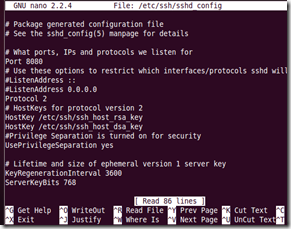

修改openssh-server 的默认端口号
发表于|Technical
|浏览量:
1、首先，编辑sshd_config文件
$ sudo nano /etc/ssh/sshd_config
{kind=link}
将Port 修改成自己定义的端口号，我这里改成了8080
2、重启sshd服务$ sudo service sshd restart
如果没什么错误，就可以使用新的端口连接了
文章作者: all4fun
版权声明: 本博客所有文章除特别声明外，均采用 CC BY-NC-SA 4.0 许可协议。转载请注明来源 all4fun blog！
赞助
 微信
微信 支付宝
支付宝
相关推荐
2012-07-11
清除mysql的log-bin日志
前一阵子工作项目上的事情忙的焦头烂额，最近要进行部门调整将要去做新的项目。又要学习很多新的知识了，还是很兴奋激动的。今天下班回来查看了一下VPS状态，发现VPS的空间只剩下了1G多！第一反应是被入侵了，但是看了一下log并没有发现什么异常的登录，加上平时基本都是用私钥免密码登录的VPS，别入侵的可能也不是很大。那我就很疑惑了，因为系统文件占用应该也就3G多，我平时并没有在VPS放过什么大文件，不应该一下子少那么多空间。于是开始一番du查找终于找到了罪魁祸首！原来是mysql的log文件导致的。 装mysql并运行一段时间后，在mysql目录下出现一堆类似mysql-bin.000***，从mysql-bin.000001开始一直排列下来，而且占用了大量硬盘空间，高达十几个G.。原来mysql-bin.000001、mysql-bin.000002等文件是数据库的操作日志，例如UPDATE一个表，或者DELETE一些数据，即使该语句没有匹配的数据，这个命令也会存储到日志文件中，还包括每个语句执行的时间，也会记录进去的。 这些形如mysql-bin.00001的文件主要是用来做什...
2012-01-26
为ipad2安装和配置gcc编译环境
iPad2可不仅仅是一个电子书，也不仅仅是用来看电影大号MP4。 废话就不多说了，下面介绍的是我给iPad2配置gcc编译环境的过程。 1、首先你必须越狱，网上教程也很多，这里就不多讲了。 声明：越狱可以让你的ipad运行无签名的可执行文件，但可能损害你的设备，对于你设备可能出现的问题，本文不负任何责任！ 好了，现在我假设你的设备已经越狱成功。很棒，下面请让你的ipad接入一个无线网络，后续的步骤也可能需要网络 ：） 如果你想使用电脑来SSH 到iPad2 你可能需要使用Cydia来安装openssh。 记得安装完Openssh要修改root和mobile用户的密码哦！（默认是alpine） PC端可以可以使用putty 和winscp配合来访问iPad2，MAC系统或者Linux可以使用系统自带的终端 ssh root@192.168.1.6 。我这里使用的是Tunnelier，它集成了putty 和winscp两款工具的功能，...
2012-07-23
实现SSH无密码登录
好久没有写博客了，前一阵子工作实在是太忙，回来也没有了写博的激情。这几天给自己放了个假，出去玩了两天，状态好了不少。 一、在Linux中 有机器A[192.168.1.1]，B[192.168.1.2]。现想A通过ssh免密码登录到B。第一步，在A机下生成公钥/私钥对。[root@A ~]$ ssh-keygen 直接三次回车，它将在~/下生成.ssh目录，.ssh下有id_rsa和id_rsa.pub。 第二步，把A机下的id_rsa.pub复制到B机下 完成后还需要将id_rsa.pub内容追加到B机的.ssh/authorized_keys文件里。 [root@A ~]$ scp ~/.ssh/id_rsa.pub root@192.168.1.2:~/id_rsa.pub 由于还没有免密码登录的，所以这里还要输入密码。 输入B机器的登录密码后，文件就复制到了B机器的~/目录。 第三步、B机把从A机复制的id_rsa.pub添加到.ssh/authorzied_keys文件里。 [root@B ~]$ cat id_rsa.pub >> .ssh/a...
2012-01-30
ipad2下的vim安装和配置
前面写了给ipad2配置gcc编译环境的过程，中间用到了vim这款文字编辑工具，默认安装的vim需要一些配置才能对语句正确着色和自动折行。 vim可以通过cydia中搜索安装，或者ssh到ipad，直接执行命令： sudo apt-get install vim 来安装（apt命令需要安装Aptitude 及 APT 0.6 Transitional deb 包工具） ipad中配置vim跟Linux中配置vim基本一致，使用mobile用户ssh到ipad，然后在mobile用户目录下增加.vimrc文件。 vim .vimrc 输入如下内容： set nocompatible “取消vi兼容模式 syntax on “设置语法高亮 set cursorline set number set hlsearch set foldmethod=syntax set foldenable set laststatus=2 set statusline=\ % 使用:wq或者ZZ保存并退出 重新使用vim编辑文件，看看是不是有语法高亮了。: )
2012-07-23
使用SSH实现iPhone自动代理
对于绝大部分国内网站，正常上网，对于twitter等，自动走SSH代理，无需手工切换，这即是所谓的“自动翻墙”，好处就是不影响国内网站的访问速度，不用来回切换网络。 IOS中最方便的翻墙方式是使用VPN，速度尚可，但PPTP和L2TP是不能像OpenVPN一样定义路由的，打开VPN后，所有流量均走VPN线路，浏览国内网站很慢，需要来回切换。windows下可以用脚本定义静态路由，使用Route设置脚本，实现国内网不经VPN搞定，但IOS下在cydia找了半天也没找到iptable这个命令包，所以还是用ssh吧。下面是具体使用方法： 1、越狱，并配置好ios的环境 如何越狱就不用我说了吧，随便一搜网上一大堆，越狱后如果你不知道如何ssh连接到你的ios设备可以参考我以前的一篇文章：为ipad2安装和配置gcc编译环境，当然这里没必要安装gcc环境，所以进行到第二步就OK了。 2、安装一些必须的软件包 如果你确定第一步你已经没有问题了，我们下面要继续安装一些必须的软件包。ssh连接到你的iPhone或者iPad后执行下面的命令： sudo -i apt-get install ...
2011-11-29
Globus Toolkit 安装与配置
1. 安装前准备工作 准备工作包括软件的准备和环境变量的设置。操作系统选用ubuntu 11.10，Globus Toolkit的安装包为：gt4.0.8-all-source-installer.tar.gz（或者使用适用于ubuntu的gt4.0.8-x86_deb_3.1-installer.tar.gz）下载地址：http://globus.org/toolkit/downloads/，此外还需安装JDK、ANT 下载地址：http://ant.apache.org/bindownload.cgi、JUNIT最新版本。 图1表示了各软件之间的层级关系。 图1 各软件层级关系 图2为GT4的安装流程图。 图2 GT 安装流程图 辅助软件安装完成之后，需要设置系统环境变量。具体方法是修改系统变量配置文件 /etc/profile。 参考： # /etc/profile: system-wide .profile file for the Bourne bash (sh(1)) # and Bourne compatible bashs (bash(1), ksh(1)...
公告
VPS 香港服务器推荐： VollCloud HK CMI服务器